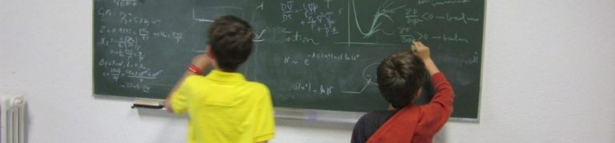
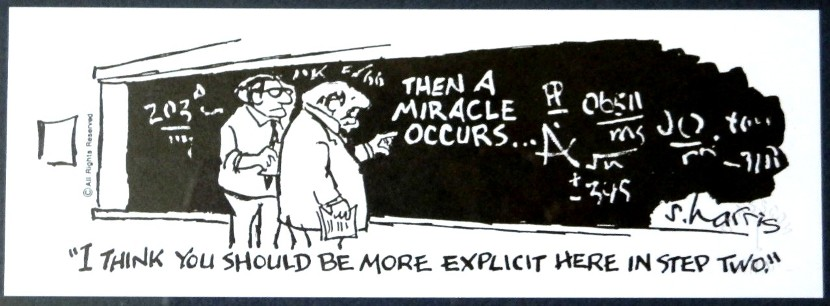

- Thermodynamics, BA2 Chem, Phys
- Physical Chemistry I, BA2 Chem
How capillarity and fluid flow shape the (living) world !
- Statistical Physics I and II, BA3 Chem
How understand matter from statistics on large ensemble of particles.
- Physics of Macromolecules, MA1, Phys, Chem
What is the consequence of attaching particles to build long chains ?
- Morphogenesis and instability, MA1, MA2 Chem, Phys, Math
Emergence of complexity from the collective self-organization of particles
- Dimensional analysis and scaling laws, MA2 Chem, Phys
How to design quantitative theoreticel models .... with a minimum of effort !
